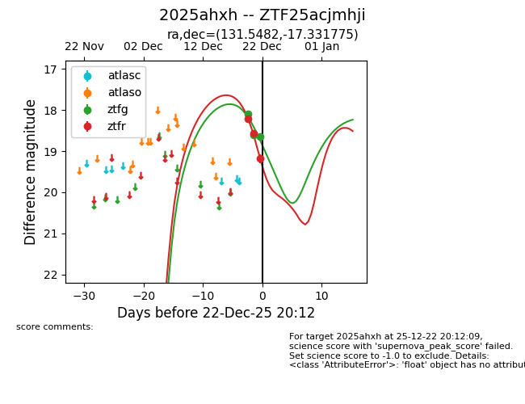
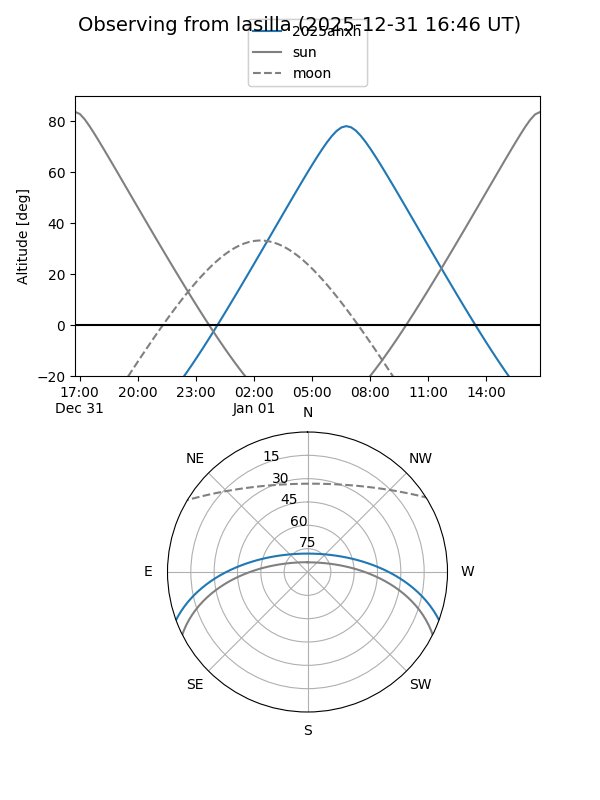
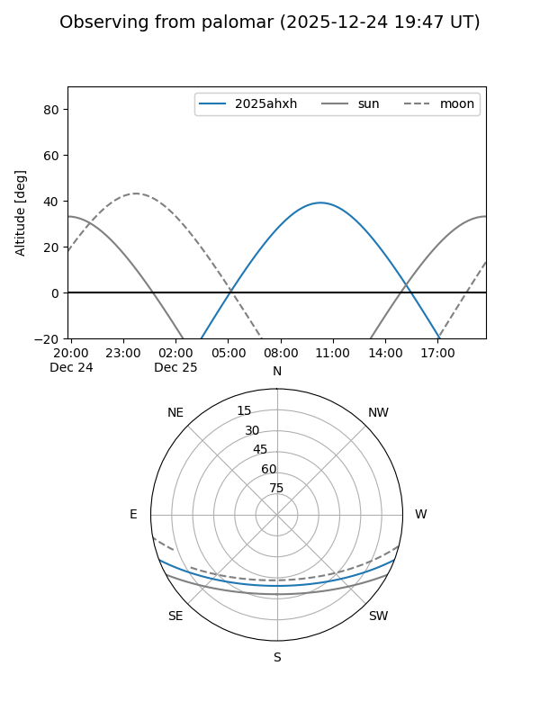
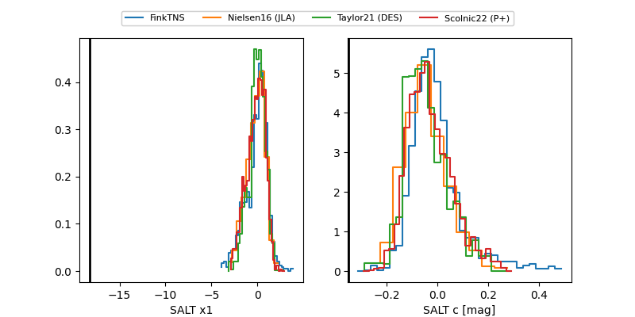

2025ahxh
Target 2025ahxh at 2025-12-25 12:02
Aliases and brokers:
FINK: fink-portal.org/ZTF25acjmhji
Lasair: lasair-ztf.lsst.ac.uk/objects/ZTF25acjmhji
ALeRCE: alerce.online/object/ZTF25acjmhji
TNS: wis-tns.org/object/2025ahxh
YSE: ziggy.ucolick.org/yse/transient_detail/2025ahxh
alt names
ZTF25acjmhji (ztf,fink_ztf)
2025ahxh (tns,yse)
Coordinates:
equatorial (ra, dec) = 131.5482,-17.33177
equatorial (HMS+DMS) = 08:46:11.57,-17:19:54.39
galactic (l, b) = (242.4477,+15.78342)
Flags:
likely cv
Photometry:
last atlasc=18.90, atlaso=19.10, ztfg=18.64, ztfr=19.18
1 atlasc, 1 atlaso, 3 ztfg, 3 ztfr detections
Lightcurve

Visibility


Additional plots
